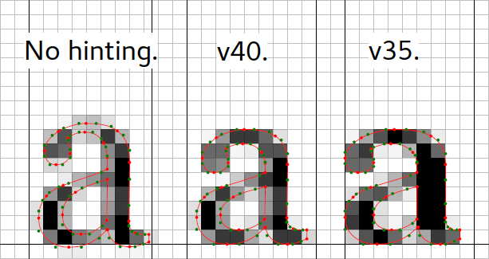
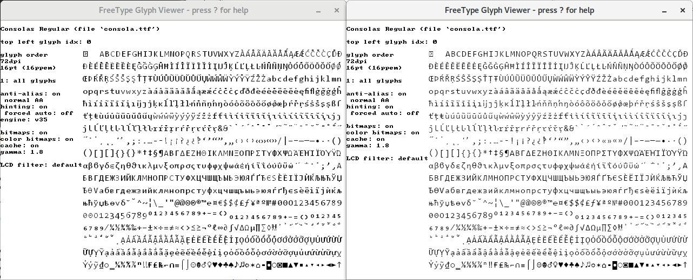
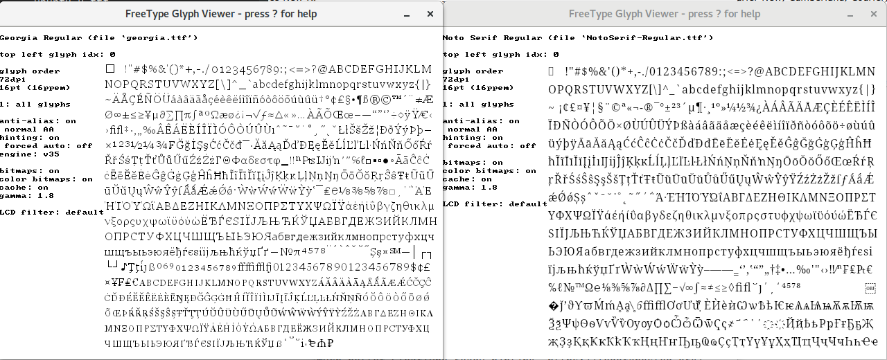

FreeType 2.7 ships the new v40 TrueType instructions interpreter version enabled by default. It finally brings DirectWrite/ClearType-like rendering to the screen, or ‘subpixel hinting’ as some FreeType code calls it. Actually, there is no subpixel hinting. Read on.

For the past years, the previous v35 interpreter did as the TrueType specification from the 90s said. The TrueType hinting machinery was originally conceived to make vector outlines render well as black-and-white bitmaps on the coarse-pixeled CRTs of back in the days. Look at screenshots of Windows 95 and you'll see pixely, bitmappy text. In reality, the single glyphs are scalable vector outlines beaten into the pixel grid by small programs run on them inside the font before being handed off to the rasterizer. Read: glyphs were designed to be reprogrammed on the fly, per size, for sharper on-screen display. Microsoft invested significant manpower into what is commonly called the core web fonts (Arial, Times New Roman, Courier New, etc.) to beat and re-beat each and every glyph to a full pixel grid at all commonly used sizes. If this sounds like a lot of sisyphean work, that's because it is. To this day, only few font families have had the same amount of work put into them.
Times changed, LCDs came along and Microsoft rediscovered subpixel rendering that exploits the physical structure of LCD subpixels, usually RGB stripes, to increase the horizontal resolution approximately three times (not quite actually since you need to apply a blurrying filter to lessen color fringes). More resolution meant that less work had to be put into a font and instead of snapping things to full pixels, they could now be snapped to one of those three subpixels or a fraction of that for a much finer appearance (‘subpixel hinting’) while still appearing sharper than with plain old grayscale antialiasing. Since fonts are explicitly programmed in the TrueType model, they now had a lot of older fonts that would need to be updated to take advantage of the new possibilities or to even render correctly. Knowing this would never happen, they implemented supersampling and a compatibility mode that contained several interpreter rigs and preventive measures for dirty hacks used in older fonts to achieve pixel perfection. Older fonts that were snapping things to full pixels all around could now at least benefit a little from the increased horizontal resolution. Beat Stamm describes this work in detail on his site. Microsoft later released the ClearType collection fonts (Calibri, Cambria, Consolas, etc.) to demonstrate the new possibilities that just so happened to rely on this compatibility mode to render correctly. Many new fonts did and still do.
FreeType didn't implement a similar compatibility mode. This had two side effects.
It lead to glitches when rendering fonts that assumed a compatibility mode with supersampler and interpreter rigs is present, i.e., most modern fonts.

The same can happen on Windows if you disable ClearType in the system settings and look at random web pages with custom fonts.
Different fonts in a browser could look jarringly different next to each other. Older fonts like the core web fonts snap things to full hard pixels on both axes, newer fonts and especially web fonts often use a hinting strategy that snaps glyphs to the pixel grid mainly or only vertically and with varying strength.

Snapping things to the grid on one axis instead of two greatly reduces the complexity and cost of hinting, looks smoother and comes with important spacing benefits for horizontal (Latin!) text. And it's just as readable.
For some time already, FreeType shipped with a v38 interpreter, also known as ‘Infinality’. Its developer set out to make fonts render better than on Windows and give users the ability to configure font rendering to their liking. Out of the box, it made fonts look like they were rendered through ClearType instead of on Windows 95. It was disabled by default because it was painfully slow and the original developer lost interest in developing the code further. You'll find it used in several distribution repositories maintained by community members.
My work on stem darkening (incompatible with explicit horizontal hinting, i.e., TrueType) and frustration that v35 was still the default (I prefer what DirectWrite/ClearType puts on the screen) led me to strip the v38 Infinality code to the bare minimum and remove all configurability in the name of speed and simplicity. The result is called v40 and it's just as fast as v35. v38 is still there and usable, it just isn't compiled in by default. If you compile it in, you can switch between the different interpreters at runtime, using an environment variable (or using the property API of FreeType). There is currently no way to switch this from FontConfig or any other means. Packagers of ‘Infinality’ packages will probably jump in and update the packages accordingly.
Here is the core secret to making fonts render like through DirectWrite/ClearType on Windows: There actually is no subpixel hinting going on here. Shock. The code simply ignores all horizontal hinting instructions. That's less work than supersampling and gets us almost identical results and additionally prevents changes to the advance width of glyphs. This greatly harmonizes the look of older and newer TrueType fonts and incidentally solves glyph spacing problems of less well instructed fonts. Switching to the new mode might take some getting used to though, so if you think your fonts are suddenly fat, fuzzy or weird, give your brain some time to adjust.
No upside without a downside, though. What made v38 so slow was its attempt to implement the hacks Microsoft describes in a whitepaper for their interpreter and rasterizer and a configuration layer on top of that so fonts could be specially handled down to single glyphs. Given the bugs in and dirty hacks used by Arial and co., this was necessary to make them render better than on Windows. In my opinion, this is solid over-engineering in times where the web is full of good-quality typefaces that display well without horizontal hinting or don't even have it.
The v40 code does not use any whitelist or other means to handle certain fonts differently. It focuses on ignoring horizontal hinting and preventing the dirtiest hacks that dent more than they help. Modern fonts like Calibri, Cambria, Consolas, etc., render well with this approach, older fonts like Arial, Times New Roman, Georgia and Verdana display mostly fine with smaller details off. And that's okay. Basically, the harder a font tries to create pixel-perfect black and white bitmaps for old CRT monitors, the worse the results in the new mode. If someone finds ways to make older fonts render better without introducing lists or overly complex hacks, I'm interested.
PS: I recommend using the Liberation family of fonts (version 2 and up, important!) instead of Arial, Times New Roman, and Courier. The family harmonizes much better internally and is equipped with much better ClearType-ready hinting. Fedora still ships some 1.x version; you can get the newer 2.x with improved hinting and glyph coverage from here.
Last update: 13-Feb-2018